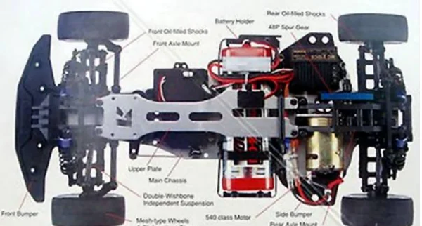

京商 PureTen EPスパイダーMk.II

引用元画像：rcscrapyard.net
📋 基本情報
| メーカー | 京商（Kyosho） |
|---|---|
| 機種名 | PureTen EPスパイダーMk.II（PureTen EP Spider Mk.II） |
| シャーシ略称 | EPスパイダーMk.II |
| 型番 | 30991（Dodge Ram Truck） |
| 発売時期 | 2000年頃 |
| 生産状況 | 生産終了 |
| カテゴリー | ラジコンカー（1/10スケール 電動RCカー） |
| サブカテゴリー | ツーリングカー / トラック（2WD） |
📏 シャーシスペック
| フレーム | アルミプレート製ダブルデッキシャーシ |
|---|---|
| 駆動方式 | 2WD（ベルトドライブ・リアドライブ） |
| デフギヤ | ギヤデフ |
| サスペンション | 4輪ダブルウィッシュボーン独立懸架 |
| ダンパー | SS Racing オイル入りコイルスプリングダンパー |
| ドライブシャフト | ドッグボーンドライブシャフト |
| ベアリング | ブシング（ベアリング化推奨） |
| モーター | 540タイプ（キット付属） |
💡 特徴
4WDシャーシベースの2WD仕様
- EPスパイダー4WDシャーシをベースにした2WD仕様
- ベルトドライブ2WDでシンプルな駆動系
- 部分組立済みで初心者にも扱いやすい
- トラックボディ対応のバーサタイル設計
キット内容
- 部分組立済みキット
- 未塗装レクサンポリカーボネートボディシェル
- 540モーター付属
- ホイール・タイヤ付属
- 送信機・スピードコントローラー・バッテリー・充電器は別売
2WD仕様の特徴
- 4WDシャーシベースで剛性確保
- SS Racingオイルダンパー標準装備
- ベルトドライブで効率的な駆動力伝達
- ブシング仕様（ベアリング化でさらに性能向上）
🔧 ぽすとそに工房での修理実績
修理難易度
★★★★★（非常に困難）
パーツ供給がなく、入手困難な機種です。修理には高度な技術と代替パーツの知識が必要です。
よくある故障・注意点
- ベルトの劣化・摩耗（代替品の入手困難）
- ブシングの摩耗（ベアリング化が強く推奨される）
- オイルダンパーのオイル漏れ
- ギヤデフの摩耗
- ドライブシャフトの摩耗
- プラスチックパーツの経年劣化
修理のポイント
- ベルトは定期的にテンション確認（中央部5mm程度の押し込み）
- ベルト駆動プーリーの摩耗チェック
- 全ブシングのベアリング化を強く推奨
- オイルダンパーのOリング交換とオイル補充
- ギヤボックスの定期的なグリスアップ
- ボールジョイントの定期点検・交換
その他の特徴
- 2WD仕様で扱いやすいモデル
- 4WDシャーシベースで拡張性あり
- 現代のESCやモーターへの換装推奨
- 修理には他機種の流用パーツ知識が必須
- トラックボディのバリエーションあり